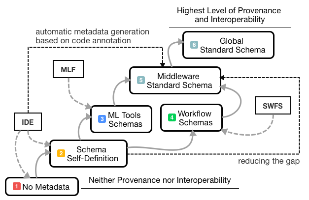
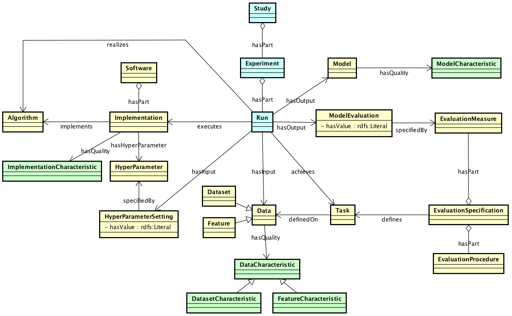

gustavo.publio@informatik.uni-leipzig.de
esteves@cs.uni-bonn.de
agnieszka.lawrynowicz@cs.put.poznan.pl
pance.panov@ijs.si
larisa.soldatova@brunel.ac.uk
tsoru@informatik.uni-leipzig.de
j.vanschoren@tue.nl
Keywords
Machine Learning
Interoperability
Provenance
Metadata
ML-Schema
MEX
Expose
OntoDM
DMOP
OpenML
WASOTA
METArchive
The ML Schema, proposed by the W3C Machine Learning Schema Community Group, is top-level ontology that provides a set of classes, properties, and restrictions for representing and interchanging information on machine learning algorithms, datasets, and experiments. It can be easily extended and specialized and it is also mapped to other more domain-specific ontologies developed in the area of machine learning and data mining. In this paper, we present the ML Schema and argue that exposing semantics of machine learning algorithms, models, and experiments may pave the way to better interpretability and to achieve the full interoperability of experiments.
Complex machine learning models have recently achieved great successes in many predictive tasks. Despite of their successes, a major problem is that they are often hard to interpret, which may affect their safeness and the level of trust of their users.
The problem of interpretability is one of the key research issues in the area of knowledge engineering and the Semantic Web community, which deals with making the semantics of various phenomena explicit. In this community, the problem of dealing with trust and traceability has gained a major interest last years, and resulted in proposal and uptake of models such as the provenance ontology PROV-O [6] .
In line with those efforts, in this position paper, we present the ML Schema 1 [1] , developed within the W3C Machine Learning Schema Community Group 2 . It is a simple shared schema that provides a set of classes, properties, and restrictions that can be used to represent and interchange information on machine learning (ML) algorithms, datasets, and experiments. It can be easily specialized to create new classes and properties and it is also mapped to more specific ontologies and vocabularies on machine learning [2] [3] [4] [5] These ontologies, in turn, contain terms for representing experiment configurations (e.g., characteristics and properties of ML datasets, algorithms and models) either in a more detailed or more abstract level.
Despite recent efforts to achieve a high level of interoperability of Machine Learning (ML) experiments Figure 1 we still run into problems created due to the existence of different ML platforms: each of those have a specific conceptualization or schema for representing data and metadata (Fig1 : itens 3 and 4: vertical interoperability). This scenario leads to an extra coding-effort (Fig1: item 2) to achieve both the desired interoperability and a better provenance level as well as a more automatized environment for obtaining the generated results. To reduce this gap, the aforementioned ML vocabularies and ontologies have been proposed [2][3][4][5] (Figure 1: item 5). The gap can be further significantly reduced by achieving interoperability among state-of-the-art (SOTA) schemata of those resources (Figure 1: item 5) i.e. achieving the horizontal interoperability (Figure 1: item 6). Therefore, different groups of researchers could exchange SOTA metadata files in a transparent manner via web services, e.g.: from OntoDM and MEX (MLSchema.Schema data = mlschema.convert('myfile.ttl', MLSchema.Ontology.OntoDM, MLSchema.Ontology.MEX)). Furthermore, the canonical format also directly benefits, such as ML ecosystems (e.g. OpenML [10]) and ML Metadata Repositories (e.g. WASOTA [9] ) which can benefit on the mappings of a shared standard.

In
Figure 2
, we depict the classes and the relationships between the classes representing the ML Schema. The schema contains
classes for representing different aspects of machine learning. This includes representations data, datasets
and data/dataset characteristics. Next, it includes representations of algorithms, implementations, parameters
of implementations and software. Furthermore, the schema contains representations of models, model characteristics
and model evaluations. Finally, the schema has the ability to represent machine learning experiments with different
granularity. This includes representations of runs of implementations of algorithms on the lowest level and representation
of studies at the highest level.

In this section, we present the relationship of the ML Schema to other proposed ontologies, and vocabularies for the domain
of machine learning. The development of ML Schema was highly influenced from, initially independent,
research of several groups on modeling the domain of machine learning. Due to this the classes and relations
present in the ML Schema re-appear in the current ML ontologies and vocabularies.
In
Table 1
, we present the mapping between the terms present in the ML Schema and the current ML ontologies and
vocabularies. Below, we describe each of the mentioned ontology/vocabulary.
Task
Data mining task
DM-Task
Task
mexcore:ExperimentConfiguration
Algorithm
Data mining algorithm
DM-Algorithm
Algorithm
mexalgo:Algorithm
Software
Data mining software
DM-Software
N/A
mexalgo:Tool
Implementation
Data mining algorithm implementation
DM-Operator
Algorithm implementation
N/A
HyperParameter
Parameter
Parameter
Parameter
mexalgo:HyperParameter
HyperParameterSetting
Parameter setting
OpParameterSetting
Parameter setting
N/A
Study
Investigation
N/A
N/A
mexcore:Experiment
Experiment
N/A
DM-Experiment
Experiment
N/A
Run
Data mining algorithm execution
DM-Operation
Algorithm execution
mexcore:Execution
Data
Data item
DM-Data
N/A
mexcore:Example
Dataset
DM dataset
DataSet
Dataset
mexcore:Dataset
Feature
N/A
Feature
N/A
mexcore:Feature
DataCharacteristic
Data specification
DataCharacteristic
Dataset specification
N/A
DatasetCharacteristic
Dataset specification
DataSetCharacteristic
Data quality
N/A
FeatureCharacteristic
Feature specification
FeatureCharacteristic
N/A
N/A
Model
Generalization
DM-Hypothesis
Model
mexcore:Model
ModelCharacteristic
Generalization quality
HypothesisCharacteristic
Model Structure, Parameter, ...
N/A
ModelEvaluation
Generalization evaluation
ModelPerformance
Evaluation
N/A
EvaluationMeasure
Evaluation datum
ModelEvaluationMeasure
Evaluation measure
mexperf:PerformanceMeasure
EvaluationSpecification
N/A
N/A
N/A
N/A
EvaluationProcedure
Evaluation algorithm
ModelEvaluationAlgorithm
Performance Estimation
N/A
The OntoDM-core ontology.
The OntoDM-core ontology has been designed to provide generic representations of principle entities in the area of data mining
[3]
. In one of the preliminary versions of the ontology, the authors decided to align the proposed ontology
with the Ontology of Biomedical Investigations (OBI)
[8]
and consequently
with the Basic Formal Ontology (BFO)
[7]
at the top level, in terms of top-level
classes and the set of relations. That was beneficial for structuring the domain in a more elegant way
and the basic differentiation of information entities, implementation entities and processual entities.
In this context, the authors proposed a horizontal description structure that includes three layers:
a specification layer, an implementation layer, and an application layer. The specification layer in
general contains information entities. In the domain of data mining, example classes are data mining
task and data mining algorithm. The implementation layer in general contains qualities and entities that
are realized in a process, such as parameters and implementations of algorithms. The application layer
contains processual classes, such as the execution of the data mining algorithm.
The Exposé ontology.
The main goal of Exposé
[4]
is to describe (and reason about) machine learning experiments.
It is built on top of OntoDM, as well as top-level ontologies from bio-informatics. It is currently used
in OpenML
3
[10]
, as a way to structure data (e.g. database design) and share data (APIs). MLSchema will be used to export
all OpenML data as linked open data (in RDF).
The DMOP ontology.
The Data Mining OPtimization Ontology (DMOP)
[2]
has been developed with a primary use
case in meta-mining, that is meta-learning extended to an analysis of full DM processes. At the level
of both single algorithms and more complex workflows, it follows a very similar modeling pattern as described
in the MLSchema. To support meta-mining, DMOP contains a taxonomy of algorithms used in DM processes
which are described in detail in terms of their underlying assumptions, cost functions, optimization
strategies, generated models or pattern sets, and other properties. Such a ''glass box'' approach which
makes explicit internal algorithm characteristics allows meta-learners using DMOP to generalize over
algorithms and their properties, including those algorithms which were not used for training meta-learners.
DMOP also contains sub-taxonomies of ML models and provides vocabulary to describe their properties and characteristics,
e.g. model structures, model complexity measures, parameters.
The MEX Vocabulary.
The MEX vocabulary
[5]
has been designed to reuse existing ontologies (i.e., PROV-O
[6]
for representing basic machine learning experiment configuration and its outcomes. The aim is not to describe a complete data-mining process, which can be modeled by more complex and semantically refined structures. Instead, MEX is designed
to provide a simple and lightweight vocabulary for exchanging basic machine learning metadata in order to achieve
a high level of interoperability. Moreover, the schema aims to serve as a basis for data management of ML outcomes.
In this position paper, we have presented ML Schema, a comprehensive schema for modeling ML domain.
The ML Schema aligns more fine-grained ontologies and vocabularies, some of which contain detailed vocabulary for representing meta-data on ML models.
The vocabulary and axiomatization included in those resources may be used to make explicit the semantics of ML models, making
them better interpretable for human users.
Acknowledgements.
Gustavo Correa Publio acknowledges the support of the Smart
Data Web BMWi project (GA-01MD15010B) and CNPq foundation
(scholarship 201808/2015-3). Diego Esteves acknowledges the
support of CAPES foundation, Ministry of Education of
Brazil (10179/2013-5). Agnieszka Ławrynowicz
acknowledges the support from the National Science Centre,
Poland, within the grant number 2014/13/D/ST6/02076.
Diego Esteves, Agnieszka Lawrynowicz, Pance Panov, Larisa N. Soldatova, Tommaso Soru, Joaquin Vanschoren
(2016). ML Schema Core Specification.
https://www.w3.org/community/ml-schema/ Last Accessed in February 1st 2018. C. Maria Keet, Agnieszka Lawrynowicz, Claudia d'Amato, Alexandros Kalousis, Phong Nguyen, Raul Palma,
Robert Stevens, Melanie Hilario (2015). The Data Mining OPtimization Ontology. J. Web Sem. Pance Panov, Larisa N. Soldatova, Saso Dzeroski (2014). Ontology of core data mining entities. Data
Min. Knowl. Discov. Joaquin Vanschoren, Hendrik Blockeel, Bernhard Pfahringer, Geoffrey Holmes (2012). Experiment databases
- A new way to share, organize and learn from experiments. Machine Learning. Diego Esteves, Diego Moussallem, Ciro Baron Neto, Tommaso Soru, Ricardo Usbeck, Markus Ackermann,
Jens Lehmann (2015). MEX vocabulary: a lightweight interchange format for machine learning
experiments. Proceedings of the 11th International Conference on Semantic Systems, SEMANTiCS
2015, Vienna, Austria, September 15-17, 2015. Lebo T., Sahoo S., McGuinness D., Belhajjame K., Cheney J., Corsar D., Garijo D., Soiland-Reyes S.,
Zednik S., Zhao J. (2013). Prov-o: The prov ontology. W3C Recommendation. Arp R., Smith B., Spear A. (2015). Building Ontologies with Basic Formal Ontology. The MIT Press. Bandrowski A. et. al. (2016). The Ontology for Biomedical Investigations. PLoS ONE. 11(4):1–19 Neto, C. B., Esteves, D., Soru, T., Moussallem, D., Valdestilhas, A., & Marx, E. (2016). WASOTA: What Are the States Of The Art?. In SEMANTiCS (Posters, Demos, SuCCESS). Vanschoren, J., Van Rijn, J. N., Bischl, B., & Torgo, L. (2014). OpenML: networked science in machine learning. ACM SIGKDD Explorations Newsletter, 15(2), 49-60.
ML Schema:
http://ml-schema.github.io/documentation/
[back]
W3C ML Schema Community Group:
https://www.w3.org/community/ml-schema/
[back]
OpenML:
http://www.openml.org/
[back]
Machine Learning Ontologies
ML Schema
OntoDM-core
DMOP
Expose
MEX Vocabulary
Conclusions
References
Footnotes